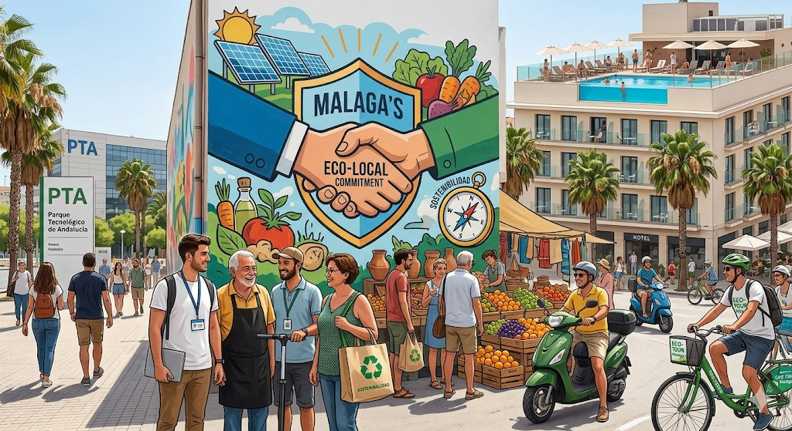

Texto

Imagen creada con Google Gemini IA para Regina Molina Arrebola
Aquí presento la propuesta completa para la descripción y el desarrollo teórico de una reflexión sobre la economía de tu entorno, en este caso, Málaga, utilizando la imagen generada como punto de partida.
Introducción Visual a la Reflexión Económica de Málaga
Para comenzar nuestra reflexión sobre la economía local, utilizaremos la siguiente imagen conceptual, que captura las múltiples fuerzas y paradojas de Málaga en un solo encuadre.
Descripción Visual de la Imagen: Esta imagen funciona como un mapa conceptual de la economía malagueña. No es solo un paisaje; es un ecosistema de tensiones y colaboraciones.
La Málaga Tecnológica (Izquierda): Vemos un clúster moderno que representa al Parque Tecnológico de Andalucía (PTA). Profesionales jóvenes, conectividad digital y arquitectura moderna simbolizan la "economía del conocimiento" y la innovación.
La Málaga Local e Identitaria (Centro-Derecha): Un mercado de abastos vibrante y tradicional, con productos agrícolas de la Axarquía y artesanía local, representa la economía de proximidad, el comercio tradicional y el arraigo cultural.
La Málaga Turística (Fondo/Derecha): Cruceros en el puerto y la silueta del Muelle Uno o la Alcazaba simbolizan la histórica dependencia del sector servicios y el turismo masivo, la "industria del sol".
La Interconexión (Foreground/Mural): Un gran mural o graffiti central sirve de andamiaje conceptual, mostrando engranajes y líneas que conectan un satélite (tecnología), un olivo (agricultura), una maleta (turismo) y una mano entrelazada (cooperación local). El texto integrado "MÁLAGA: INTERCONEXIONES" subraya la tesis central.
Desarrollo Teórico para la Reflexión Económica: "Málaga en la Encrucijada"
La economía de Málaga es un caso de estudio fascinante sobre cómo una región puede transitar de la dependencia sectorial hacia una complejidad híbrida. Nuestra reflexión teórica se estructurará sobre tres pilares fundamentales: La Paradoja de la Dualidad, El Efecto de la 'Glocalización' y La Sostenibilidad como 'Andamiaje' de Futuro.
1. La Paradoja de la Dualidad: ¿Sol o Silicio?
Teorizar sobre Málaga requiere, ante todo, analizar su dualidad. Durante décadas, Málaga operó bajo un modelo económico "Sol y Playa", un sector servicios hipertrofiado que generaba empleo rápido pero estacional y de bajo valor añadido. La imagen captura esto en los elementos turísticos del fondo.
La irrupción del PTA y la consolidación de la marca "Málaga Tech" han introducido una segunda fuerza económica, visible en el clúster de la izquierda. La paradoja radica en que estos dos modelos a menudo compiten por los mismos recursos: suelo, talento y agua. La reflexión teórica debe cuestionar si esta convivencia es una simbiosis (donde la tecnología mejora el turismo, por ejemplo, mediante la smart-tourism) o una gentrificación productiva (donde el sector tecnológico desplaza al tradicional).
Términos Clave: Estacionalidad, Valor Añadido, Estructura Productiva, Dualidad Económica.
2. El Efecto de la 'Glocalización' y la 'Fuga de Cerebros' Inversa
Málaga es un nodo vibrante de la 'glocalización'. Esto significa que fuerzas globales (como grandes multinacionales tecnológicas atraídas por la calidad de vida y la conectividad) impactan directamente en el tejido local. La imagen lo representa: el PTA es un nodo global en un entorno local.
Esto genera un fenómeno de "fuga de cerebros inversa" o atracción de talento internacional (digital nomads), pero también presiona sobre la economía doméstica. La teoría económica nos advierte sobre el riesgo de crear una "economía de enclave" dentro del PTA, desconectada del mercado local (representado por el mercado central de la imagen). Nuestra reflexión debe centrarse en cómo transferir el conocimiento y la riqueza del sector tecnológico hacia el comercio local y la educación pública de la región, evitando que la tecnología sea solo un "escaparate".
Términos Clave: Glocalización, Deslocalización, Efecto Multiplicador, Capital Humano.
3. La Sostenibilidad como 'Andamiaje' y Feedback
El futuro de la economía de Málaga está condicionado por su entorno físico. La imagen integra sutilmente elementos de sostenibilidad (placas solares en el mercado, bicicletas de carga). La teoría económica de la sostenibilidad debe dejar de ser un apéndice y convertirse en el andamiaje central.
La reflexión debe usar el feedback loop (bucle de retroalimentación): ¿Cómo afecta el cambio climático y la escasez de agua (un riesgo real en la provincia) a la producción agrícola (mercado local)? ¿Cómo puede la tecnología (PTA) desarrollar soluciones para el estrés hídrico de la región? La sostenibilidad no es un coste, sino la única vía para garantizar que la dualidad Sol/Silicio sea viable a largo plazo.
Términos Clave: Economía Circular, Estrés Hídrico, Sostenibilidad Productiva, Resiliencia Económica.
Conclusión para la Reflexión: Al analizar la imagen y aplicar estos marcos teóricos, el alumnado no solo "ve" la economía de Málaga, sino que "piensa" en sus contradicciones y "se pregunta" por las políticas necesarias para construir un futuro equilibrado. La economía malagueña no debe ser una competición entre el sol y el silicio, sino una interconexión inteligente de ambos.